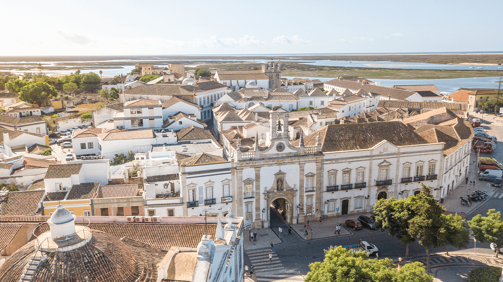

Turismo na cidade de Faro
Faro
Faro é a capital do Algarve e um destino que combina património histórico, natureza e praias. O seu centro histórico, conhecido como Cidade Velha de Faro, preserva muralhas, ruas empedradas e monumentos como a Sé de Faro. A cidade é também a principal porta de entrada para o Parque Natural da Ria Formosa, uma área protegida de grande biodiversidade com ilhas, lagoas e praias de areia branca acessíveis por barco. Com uma gastronomia rica em peixe e marisco, um clima ameno durante grande parte do ano e uma oferta diversificada de cultura e lazer, Faro é um excelente ponto de partida para explorar o Algarve.
